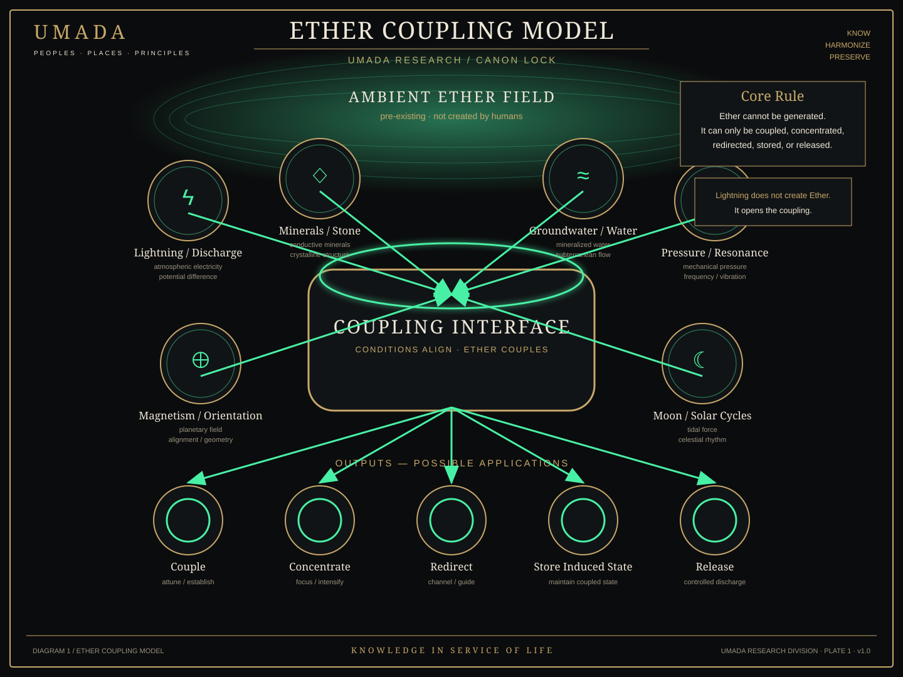
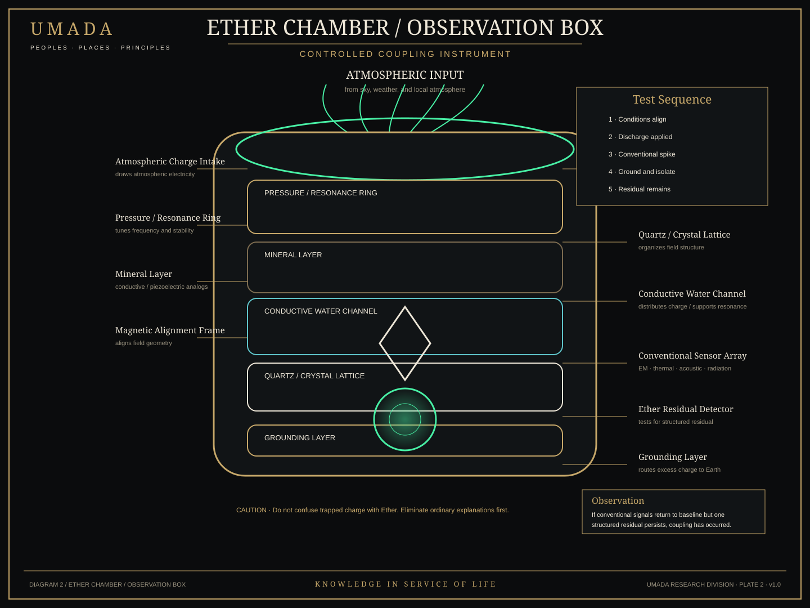
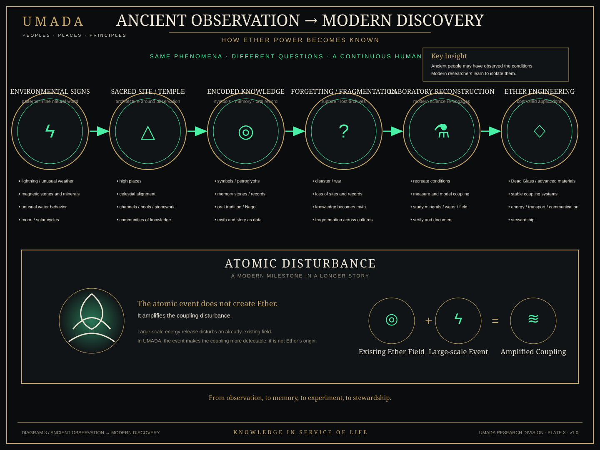

Ether Research Plates — Series 01
LOCKED CANON MECHANISM RESEARCH ANALOGUES
Three visual plates showing how UMADA treats Ether as a field that already exists: environmental conditions can open, shape, or stabilize coupling, but they do not create Ether.
Reality boundary
These diagrams are UMADA speculative-fiction research artifacts. They are not evidence that Ether exists in the real world, and they do not claim that ancient monuments were electrical power plants. Documented geoelectric, lightning, geological, atmospheric, and archaeological analogues are tracked separately and remain subject to ordinary scientific evidence.

Plate 01 — Ether Coupling Model
Core rule: Ether cannot be generated. It can only be coupled, concentrated, redirected, stored, or released. Lightning does not create Ether; in canon, it can open a coupling condition.

Plate 02 — Ether Chamber / Observation Box
The chamber is a method, not a magic detector. Conventional explanations—trapped charge, heat, magnetization, chemistry, acoustic effects, radiation, and sensor error—must be tested first. Only a persistent structured residual becomes evidence of Ether inside the fiction.

Plate 03 — Ancient Observation → Modern Discovery
The narrative pathway is observation → architecture → encoded knowledge → fragmentation → reconstruction → engineering. The atomic event is a large disturbance in an already-existing field, not Ether's origin.
Research links
- Research Archive
- The Trinity Threshold
- Ether Power — Coupling Model
- Ancient Earth-Energy Analogues for Ether Power
10_visuals/ether-research-plates/. Accessibility metadata is embedded in each SVG with a title and description.